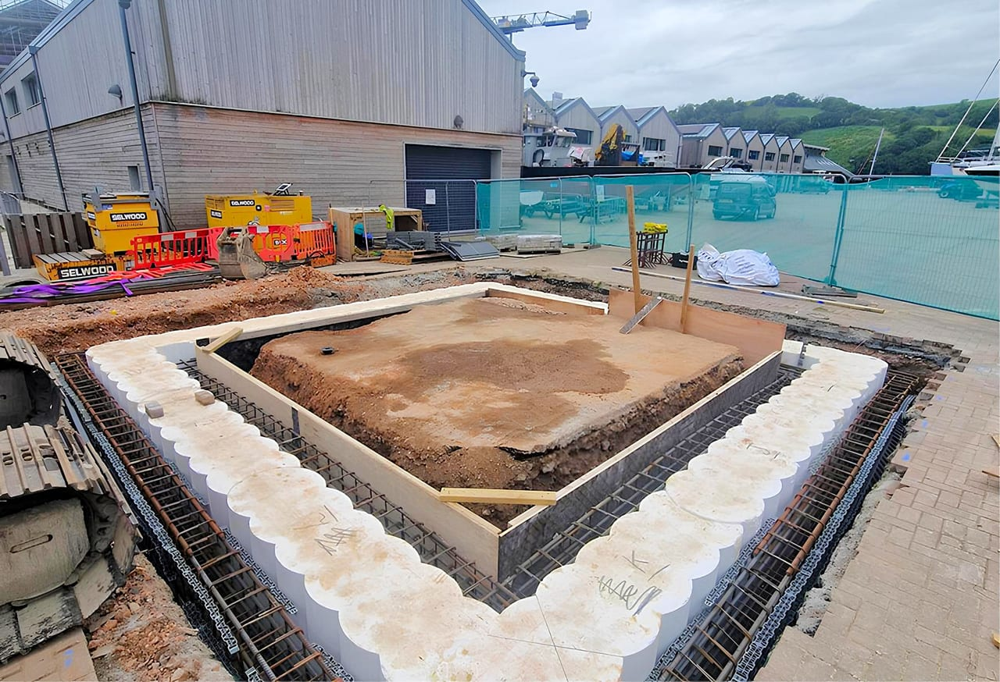
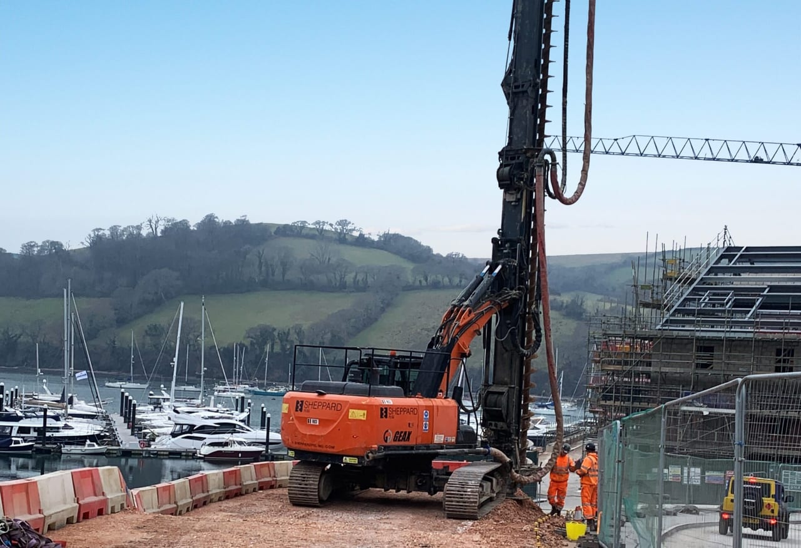
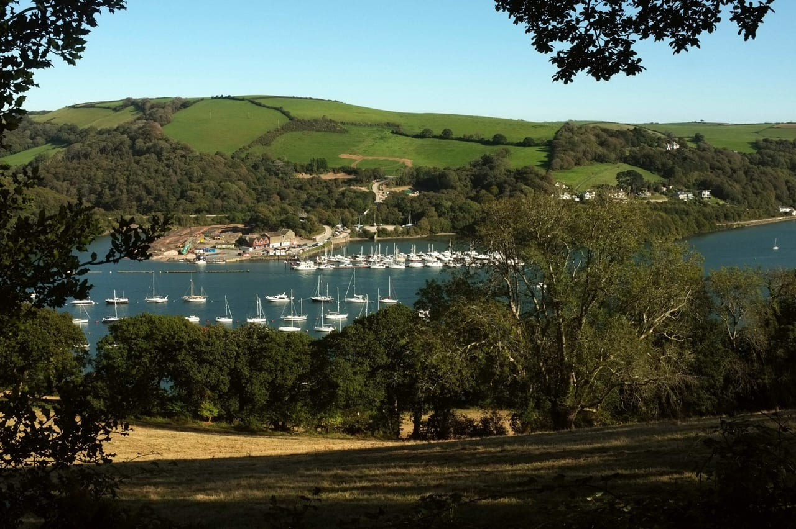
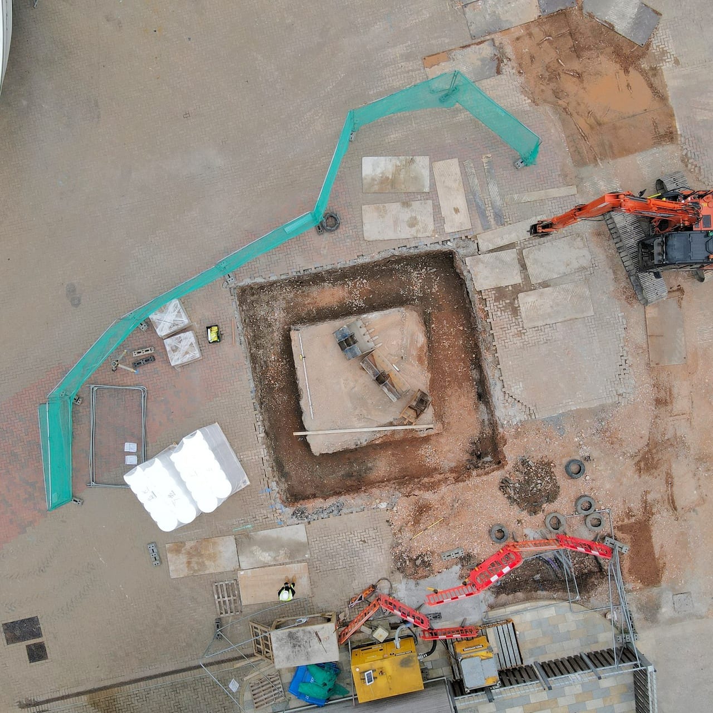

A former River Dart shipyard has been redeveloped as a marina and working boatyard.
- Development owner
- Premier Marinas
- CASE role
- Temporary works, pumping station design input, cladding details
- Pumping station contractor
- Aurum / Ark Group
Our design input to the foul-water pumping station sat alongside structural input from Hamill Davies.
Aurum and Ark Group built the pumping station. Its wet well was excavated 7.5 m deep in tidal groundwater inside an 8 m by 8 m secant-piled cofferdam, with controlled dewatering beside an operating marina.



